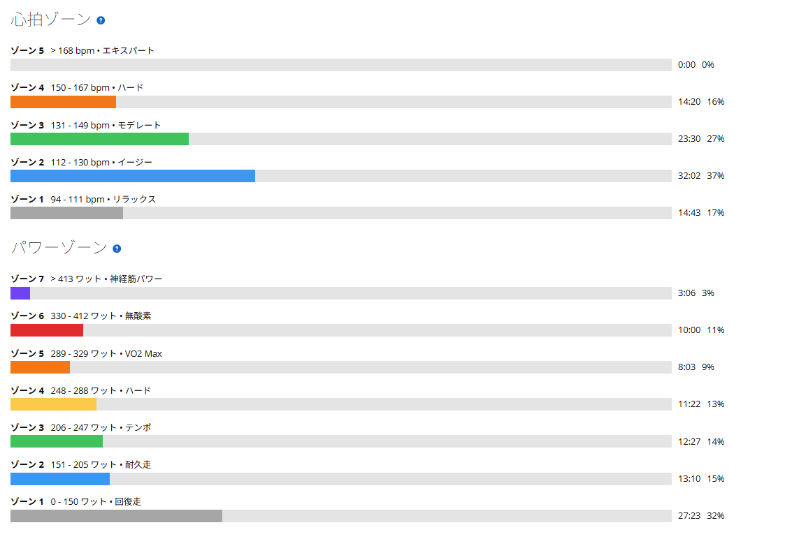
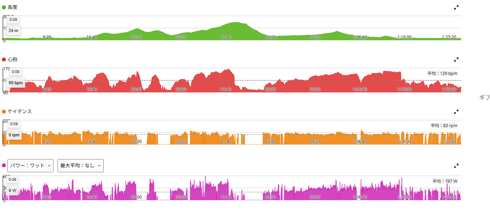
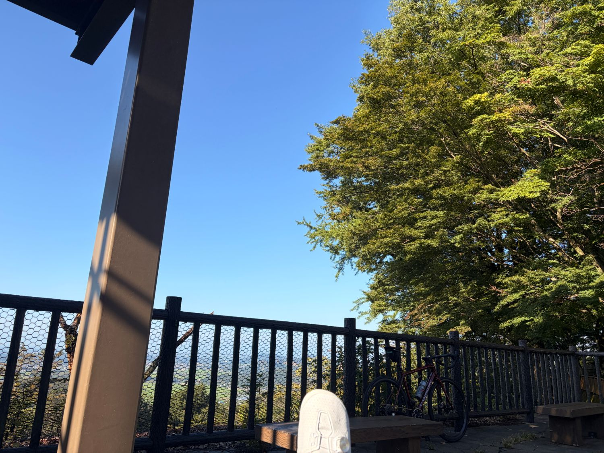

ウエット路面で予定変更。低ケイデンスでも力まず踏める幅が増えてきた
今日は太平から琴平、唐沢へつなぐつもりで走り出した。ところが前日に雨が降っていて、林道の路面はかなり荒れていた。ウエットのうえ枝葉も散乱していて、全体的にコンディションが良くない。
この路面で先へ進むのはやめて、琴平・唐沢はカット。代わりに帰りのラストストレートまで踏んで帰ってきた。予定どおりのコースにはならなかったが、内容としてはかなりしっかり踏めた日である。

40.85km・NP259W・TSS125.9
- 全体40.85km / 1時間25分34秒 / 獲得477m
- 負荷平均197W / NP259W / IF0.942 / TSS125.9 / 最大594W / 20分最大270W
- 心拍・回転平均129bpm / 最大167bpm / 平均83rpm
- 環境平均26.2℃ / 最高29.0℃ / 推定発汗1,146ml
- 効果有酸素TE3.5 / 無酸素TE0.0
85分でNP259W、IF0.942。予定していたフルコースより獲得標高はかなり少なくなったが、強度としては十分だった。
パワーゾーンを見ると、ゾーン7が3分06秒、ゾーン6が10分00秒、ゾーン5が8分03秒。ゾーン5以上だけで21分09秒あり、高い出力に何度も入っている。一方で心拍はゾーン4が14分20秒、ゾーン5は0秒だった。脚ではしっかり仕事をしているが、心肺が破綻するような走りではない。

西山田林道で1分56秒・402W
- 西山田林道1分56秒 / 平均402W / 心拍139〜148bpm / 80rpm
今日いちばん印象に残ったのがここである。平均402Wなので75kg換算で約5.36W/kg。数字だけ見ればかなり高い。それなのに、体感としては心拍がそこまで苦しくなかった。
最近ずっと意識しているのが、低めのケイデンスでも上半身と下半身を力ませず、ペダルへうまく力を伝えることだ。今日は70台後半から80rpm前後でも、それがかなりうまくできた感覚があった。以前なら低ケイデンスになると「重いギアを踏み潰す」感覚になりやすかったが、今日はそうではない。骨盤を安定させる、上半身を固めない、脚だけで押し込まない、股関節から自然に力を伝える。そんな感覚で回すと、思ったより高いパワーでも登れてしまう。

太平は7分06秒・319W。ただし「前回と同じ」では片付けない
- 太平7分06秒 / 平均319W / NP333W / 心拍150〜167bpm / 87rpm
前回もほぼ同じくらいのパワーだった。ただ今回は、単純に「前回と同じ」とは言い切れない。
太平には下っている区間がある。今日は路面がウエットだったので、その下りをいつもよりかなり慎重に走った。つまり平均319Wに収まっていても、実際に踏んでいる区間では前回より出力の上下が大きかった可能性がある。平均値だけを見るより「抑えて下る区間があるなかでも、踏むところではしっかり踏めていた」と考えた方が実感に近い。
ラストストレートでも踏み直せた
- ラストストレート前半9分02秒 / 平均278W / NP284W
- ラストストレート後半7分27秒 / 平均297W / NP306W
琴平・唐沢は路面を見て中止したので、その代わりに帰りのラストストレートで踏んだ。途中に信号待ちが入っているのでひと続きの持続走としては見ていないが、太平を走った後で後半に再び高い出力へ戻せたのは良かった。
今日のテーマは「太平だけ速い」ではなく、後半でも踏み直せることだった。その意味では、予定変更後の走りとしては十分だったと思う。
路面が良くないので、その先はやめた
前日の雨のせいで、林道は全体的にウエットだった。枝や葉もかなり落ちている。西山田林道では倒木も見かけたが、これはスピードが乗る区間ではなく通過もできたので、それ自体は問題ではない。判断の理由はあくまで路面の状態である。
この状態で琴平・唐沢まで進むのはやめておいた。ロードバイクで濡れた林道を走り続ける以上、トレーニングより安全が先である。結果的には予定ルートを短縮しても十分な強度を確保できたので、判断としては悪くなかった。こういう変更が入るのも実走ならではだと思う。
Ares 2を、実走で本格的に使い始めた
今日はS-Works Ares 2も本格運用に入った。これまでクリート位置を細かく調整して、ローラーでは痛みも違和感も出ないところまで来ていた。今回はそれを高出力込みの実走で使ったことになる。

今のところ、以前気になっていたような嫌な痛みはない。残っているのは「新品の靴にまだ身体が慣れていない」という感じの違和感で、これはクリート位置がずれている時の違和感とは少し違う。履き慣れた初代Aresと比べると、足を包む感覚やアッパーの張りがまだ新品そのものという印象だ。なので今はセッティングを動かさず、このまま何回か使って馴染み方を見る。ローラーだけでなく実走でもしっかり踏めたので、ようやく本格運用へ移れそうである。
ケイデンスの選択肢が増えた
今日いちばんの収穫は、出力そのものよりここかもしれない。以前は高めのケイデンスで回す方が自然だったが、最近は70台後半でも力まず踏めるし、80rpm前後でも高出力を出せる。必要なら90rpm前後にも上げられる。
登りでは勾配や疲労によって最適な回転数が変わる。常に高ケイデンスでもなければ、常に低ケイデンスでもない。その場で使い分けられる方が実走では強い。今日はその幅が少し広がった感じがした。
今日やってみて思ったこと
予定は太平→琴平→唐沢。実際は雨上がりのウエット路面で予定変更。それでも西山田林道で1分56秒402W、太平で7分06秒319W、後半のラストストレートでも278Wと297W。かなりしっかり踏めた。
特に良かったのは、低いケイデンスでも力まずパワーを伝えられたことだ。出力を上げるために身体を固めるのではなく、脱力したまま高いトルクを出す。最近意識してきたことが、少しずつ実走で形になってきている。Ares 2もようやく本格運用開始。路面状況で予定は変わったが、収穫は多い日だった。
次に見るポイント
- ケイデンス70台後半でも力まず高出力を出せるか。膝や腰へ負担が出ないか
- 太平踏んでいる区間で実際どの程度出ているか
- フルコース琴平・唐沢まで行ける日に、後半まで出力を維持できるか
- Ares 2数回の実走で自然に馴染むか。クリート位置は現状維持で問題ないか
- フォーム高出力でも上半身を脱力したまま保てるか